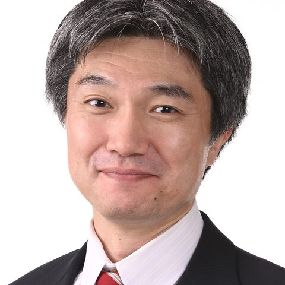

Hiroyuki Mishima
Nagasaki University · Japan
Assistant professor in rare disease bioinformatics; formerly dentist and post-doc in cleft palate and rare disease genetics. This hackathon: next-generation phenotyping by integrating facial analysis (GestaltMatcher) and HPO-based analysis (PubCaseFinder) to fight the diagnostic odyssey.
Topics: Rare disease, Clinical, Workflows, Cloud/HPC
Codes in: Ruby, JavaScript, Python, R